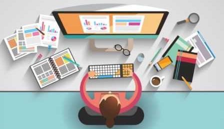

La interfaz de usuario, Interacción Humano Ordenador
En la década de los sesenta se dieron grandes avances como lo son los sitemas de ventanas, la videoconferencia, los hipertextos, y el mouse como elemento de interacción. En los setenta se presentaron las primeras interfaces gráficas de usuario, para que en los ochenta fueran la base de computadores personales disponibles al comercio. Jonathan Grudin habla de cinco etapas en el desarrollo de interfaces de usuario. La primera, se tiene como interfaz el hardware. En la segunda, las inferfaces se centran en tareas de programación. En la tercera, el teclado y el mouse proporciona interacción con el computador. En la cuarta, aparece las intefaces gráficas de usuario. La última, el impacto grupal. Los conceptos humano, computadora e interacción, ayudan a entender el desarrollo de IHC así como su naturaleza transdisciplinaria.